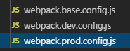

webpack配置打包
三个配置文件，基础+开发+生产

基础配置文件：（开发模式需要额外的模块，生产环境需要不同的模块，同时开发环境和生产环境又不相同，但他们又有公共的配置，于是单独提取出来成webpack.base.config.js）
当我门需要使用开发者模式的时候需要把基础配置合并过来，于是使用了merge函数，再把合并后的结果导出
const package = require('../package.json')
const path = require('path');
const VueLoaderPlugin = require('vue-loader/lib/plugin')
const utils = require('./utils')
const WebpackNotifierPlugin = require('webpack-notifier')
var TransformModulesPlugin = require('webpack-transform-modules-plugin');
// const BundleAnalyzerPlugin = require('webpack-bundle-analyzer')
// .BundleAnalyzerPlugin;
function resolve(dir) { // 接受一个相对路径，返回一个绝对路径
return path.join(__dirname, dir); // __dirname可以获取当前项目的根路径的绝对路径，字符串join拼接字符串
}
console.log('path', path.resolve(__dirname, '../node_modules/webpack-dev-server'));
module.exports = { // 配置文件整体导出一个配置对象
entry: { // 入口
main: '@/main', // @代表根路径，main.js文件是主文件入口
'vender-exten': '@/vendors/vendors.exten.js' // 待解决？？？？？？
},
output: { // 输出位置根路径退一级dist下面的mulu,添加了版本号在后面
path: path.resolve(__dirname, '../dist/' + package.version) // 输出文件的绝对路径
},
module: {
rules: [
{ // 针对vue文件使用vue-loader处理
test: /\.vue$/,
exclude: /node_modules/,
loader: 'vue-loader'
},
{ // 针对指定目录下（src, 模块目录下的vueg）的js文件，使用babel-loader转化，同时添加文件缓存?cacheDirectory=true'？？？？？
test: /\.js$/,
include: [
path.resolve(__dirname, '../src'),
path.resolve(__dirname, '../node_modules/_vueg@1.4.5@vueg')
],
use: {
loader: 'babel-loader?cacheDirectory=true'
}
},
{ // 处理js,jsx文件 和上一条规则重合了？
test: /\.js[x]?$/,
exclude: /node_modules/,
use: {
loader: 'babel-loader?cacheDirectory=true'
}
},
{ // url-loader处理文件，图片
test: /\.(png|jpe?g|gif|svg)(\?.*)?$/,
use: {
loader: 'url-loader',
options: { // 配置
limit: 10000, // 限制超过这个大小才去进行处理
: utils.assetsPath('img/[name].[hash:7].[ext]') // 函数定义如下，推测是把文件放到指定目录static/img/下面,同时指定文件名加上7位哈希值，以及扩展名ext
}
}
},
assetsPath(_path) {
const assetsSubDirectory = 'static';
return path.posix.join(assetsSubDirectory, _path); // 新建立static?并且进行地址拼接,posix是为了兼容，path.join()的不足
},
{
test: /\.(mp4|webm|ogg|mp3|wav|flac|aac)(\?.*)?$/,
use: {
loader: 'url-loader',
options: {
limit: 10000,
name: utils.assetsPath('media/[name].[hash:7].[ext]')
}
}
},
{
test: /\.(woff2?|eot|ttf|otf)(\?.*)?$/, // 处理字体
use: {
loader: 'url-loader',
options: {
limit: 10000,
name: utils.assetsPath('fonts/[name].[hash:7].[ext]')
}
}
}
]
},
plugins: [
new VueLoaderPlugin(), // 使用vue-loader插件
new WebpackNotifierPlugin(), // 编译完成后给出提示
new TransformModulesPlugin() // cube-ui的依赖组件
// new BundleAnalyzerPlugin()
],
resolve: {
extensions: ['.js', '.vue'], //引入文件的时候默认添加文件后缀，再去匹配
alias: {
'@': resolve('../src'), // 为指定路径起别名，项目里面可以简写
'~': resolve('../static'),
'cube-ui': 'cube-ui/lib'
}
},
externals: { // 扩展模块 // 声明模块是自定义引入的，webpack不对其进行打包
vue: 'Vue',
iview: 'iview',
'vue-router': 'VueRouter',
vuex: 'Vuex',
fastclick: 'window.FastClick',
md5: 'window.md5'
}
};
const merge = require("webpack-merge") //用于合并基础配置文件
const webpackBaseConfig = require("./webpack.base.config.js") // 导入基础打包配置公共文件
const webpack = require('webpack') // webpack
const GenerateFileWebpackPlugin = require('./generate-file-webpack-plugin') // 自定义工具模块
const { fileConfig } = require('./const') // 自定义文件配置
const env = 'development' // 环境默认值
const apis = require('./apis') // 导入api文件
const fs = require('fs'); // 文件处理模块
const path = require('path') // 路径模块
// 创建默认账号文件
const accountPath = path.join(__dirname, '../account.json') // 取得文件路径，相对路径被path生成绝对路径
let account = { phone: '', pwd: '' } // 默认的账户配置对象
if (fs.existsSync(accountPath)) { // 判断文件存在与否
account = require(accountPath)
} else {
fs.writeFileSync(accountPath, JSON.stringify(account)) // 没有文件就同步的方式（需要等待这个函数执行完毕）写入文件
}
// 读取 version 文件
const version = fs.readFileSync( // 同步读取版本号的文件
path.join(__dirname, '../widget/res/version.txt'), // 函数接受两个参数，绝对路径
'utf8' // 第二个参数，读取时指定字符编码
);
module.exports = merge(webpackBaseConfig, { //开发环境肯定需要合并基础配置文件
devtool: '#source-map', // 使用调试工具，能在运行时给出报错代码的位置
output: { // dev模式下，打包后文件的输出位置
publicPath: '/dist/',
filename: '[name].js', //每个文件按照自己的名字输[name]
chunkFilename: '[name].chunk.js' // 分片名字为： 原名加chunk
},
plugins: [ // dev模式的插件实例
new HtmlWebpackPlugin({ // 使用模板vue-index.ejs，同时使用ejs-loader预处理
title: '云丁助手',
filename: '../index.html', // 文件名
template: '!!ejs-loader!./config/template/index/vue-index.ejs', // 模板文件
inject: false // 不知道意思
}),
new webpack.DefinePlugin({ // 定义全局的变量，在其他地方会使用
Webpack是属于Node的程序，Node环境下的环境变量，Webpack可以配置可以灵活读取。
但是index.js里面是属于Webpack要构建的产物，如果里面也想读取环境变量。可以通过这个DefinePlugin定一下
index.js里面就可以读到了。
'process.env.NODE_ENV': JSON.stringify(env),
'process.env.ENV': JSON.stringify(process.env.ENV),
'process.API_CFG': JSON.stringify(apis),
'process.DEFAULT_ACCOUNT': JSON.stringify(account),
'process.VERSION': JSON.stringify(version)
}),
new GenerateFileWebpackPlugin(fileConfig.yd)
fileConfig.yd: [
{
modelPath: '../config/template/index/ac-index.ejs',
generateFilePath: '../widget/index.html'
},
{
modelPath: '../config/template/xml/yd.ejs',
generateFilePath: '../widget/config.xml'
}]
module: { // 模块
rules: [
{
test: /\.(js|vue)$/, // eslint-loader处理vue,js
loader: 'eslint-loader',
enforce: 'pre',
include: [path.resolve(__dirname, '../src')],
options: {
emitError: true,
emitWarning: false,
failOnError: true
}
},
{
test: /\.css$/, // 处理css postcss-loader 添加前缀，兼容不同的浏览器
use: ['vue-style-loader', 'css-loader', 'postcss-loader']
},
{
test: /\.(stylus|styl)$/, // 处理stylus
use: [
'vue-style-loader',
'css-loader',
'postcss-loader',
'stylus-loader'
]
}
]
},
//设置跨域代理
devServer: {
open: true,
stats: 'errors-only',
port: 4001,
proxy: {
'/passport': {
target: apis.passport, // 之前会有定义的接口文件几套，包含开发环境，测试，生产，预发布。导出的是url地址对象{用户登陆注册，数据接口，sdk接口}
pathRewrite: { '^/passport': '/' },
changeOrigin: true
},
'/saas': {
target: apis.saas,
pathRewrite: { '^/saas': '/' },
changeOrigin: true
},
'/sdk': {
target: apis.sdk,
pathRewrite: { '^/sdk': '/' },
changeOrigin: true
}
}
}
})
const HtmlWebpackPlugin = require('html-webpack-plugin')
const TerserJSPlugin = require('terser-webpack-plugin')
const webpack = require('webpack')
const CopyWebpackPlugin = require('copy-webpack-plugin')
const cleanWebpackPlugin = require('clean-webpack-plugin')
const merge = require('webpack-merge')
const MiniCssExtractPlugin = require('mini-css-extract-plugin')
const OptimizeCSSAssetsPlugin = require('optimize-css-assets-webpack-plugin')
const webpackBaseConfig = require('./webpack.base.config.js')
const GenerateFileWebpackPlugin = require('./generate-file-webpack-plugin')
const path = require('path')
const { fileConfig } = require('./const')
const env = 'production'
const apis = require('./apis')
// 如果build商店版，则取商店版配，否则取官方版配置
const fileCfg = process.env.ENV === 'prod:store' ? fileConfig.store : fileConfig.yd
module.exports = merge(webpackBaseConfig, { // 导出的配置和公共配置合并
output: {
path: path.resolve(__dirname, '../widget/code/dist'), // 打包生成地址
publicPath: './dist/', // 所有引入的文件资源都加上publicPath路径
filename: '[name].[contenthash].js', // 输出 bundle 的名称, 入口(non-entry)
chunkFilename: '[name].[contenthash].chunk.js' // 非入口(non-entry) chunk 文件的名称
},
optimization: {
splitChunks: { // 代码分片
cacheGroups: {
// 缓存组
commons: {
test: /[\\/]node_modules[\\/]/, // 只抽取引入的node_modules文件
name: 'vender-exten', // 要缓存的 分隔出来的 chunk 名称
chunks: 'all' // 对所有的chunk都进行缓存
}
}
},
runtimeChunk: { // 不知道什么意思？？？？？？？？？？？
name: 'runtime'
},
minimizer: [
new TerserJSPlugin({
cache: true,
parallel: true
}),
new OptimizeCSSAssetsPlugin({}) // ？？？？？？？？？
]
},
module: {
rules: [
{
test: /\.css?$/,
use: [
MiniCssExtractPlugin.loader,
'css-loader',
'postcss-loader'
]
},
{
test: /\.(stylus|styl)$/,
use: [
MiniCssExtractPlugin.loader,
'css-loader',
'postcss-loader',
'stylus-loader'
]
}
]
},
plugins: [
new GenerateFileWebpackPlugin(fileCfg, process.env.ENV),
new webpack.DefinePlugin({
'process.env.NODE_ENV': JSON.stringify(env),
'process.env.ENV': JSON.stringify(process.env.ENV),
'process.API_CFG': JSON.stringify(apis),
}),
new MiniCssExtractPlugin({ // css代码抽离成单独的文件
filename: '[name].[contenthash].css',
chunkFilename: '[name].[contenthash].css'
}),
new cleanWebpackPlugin(['widget/code/*'], {
root: path.resolve(__dirname, '../') // 清除上次打包文件
}),
new CopyWebpackPlugin([ // 目录文件拷贝
{
from: path.resolve(__dirname, '../static'),
to: path.resolve(__dirname, '../widget/code/static'),
ignore: ['*.png']
}
]),
new HtmlWebpackPlugin({ // 生成html模板
title: 'app项目',
favicon: './static/favicon.ico',
filename: '../index.html',
template: '!!ejs-loader!./config/template/index/vue-index.ejs',
inject: false
})
]
});